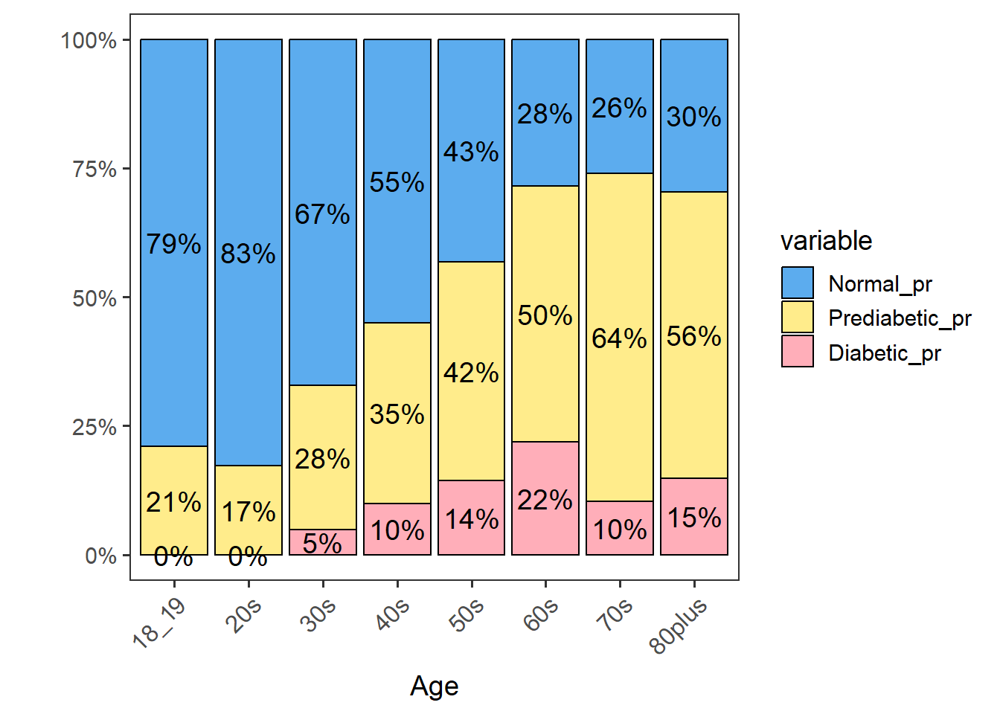
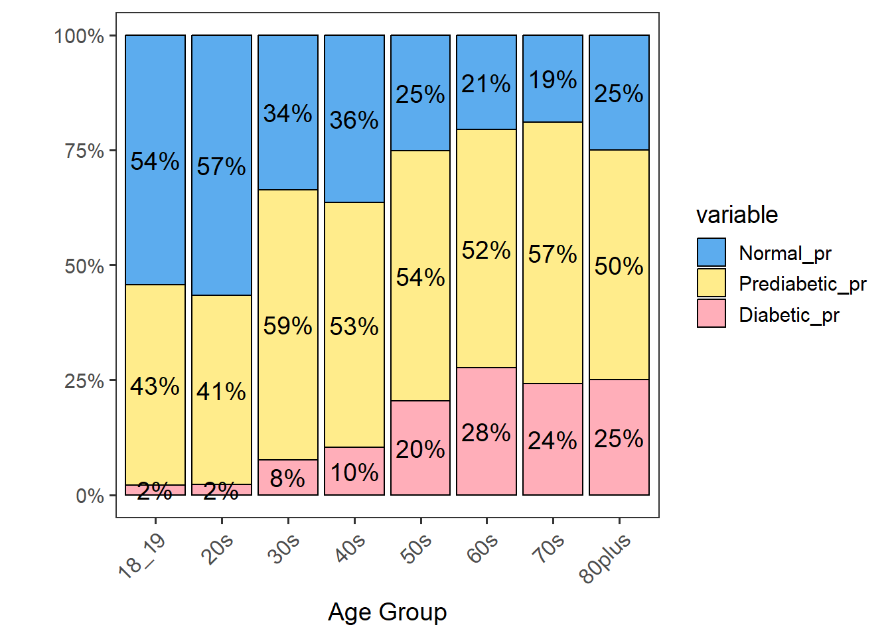

Here, we will look at the percentages of normal, prediabetic, and diabetic participants in our dataset by age and gender groups.
Name the path to DietDiveR directory where input files are pulled.
main_wd <- "~/GitHub/DietDiveR"Load necessary packages.
library(ggplot2)
library(reshape2)Load the necessary functions.
source("lib/specify_data_dir.R")
source("lib/ggplot2themes.R")
source("lib/add_gender_and_age.R")
source("lib/stacked_perc_two_var.R") You can come back to the main directory by:
setwd(main_wd)Specify the directory where the data is.
SpecifyDataDirectory(directory.name = "eg_data/NHANES/Laboratory_data")Load the data of those to be used in the diabetes status analysis.
glu_2 <- read.table( file="QCtotal_d_ga_body_meta_glu_comp_2.txt", sep= "\t", header=T)Make GLU_index as a factor for plotting.
glu_2$GLU_index <- factor(glu_2$GLU_index, levels = c("Normal", "Prediabetic", "Diabetic"))Add gender and age_groups to glu_2. The output is named “totals_out”.
AddGenderAgeGroups(input= glu_2, age.col="RIDAGEYR", gender.col="RIAGENDR")Rename the output.
glu_2 <- totals_outEnsure that glu_2 now has Gender, AgeGroup, and Gender_Age columns.
head(glu_2[, c("Gender", "AgeGroup", "Gender_Age")])## Gender AgeGroup Gender_Age
## 1 M 50s M_50s
## 2 F 40s F_40s
## 3 F 70s F_70s
## 4 M 20s M_20s
## 5 F 60s F_60s
## 6 M 60s M_60sSelect females.
glu_2_females <- subset(glu_2, Gender == "F") Check the dimension of the selected data - 845 rows.
nrow(glu_2_females)## [1] 845Calculate percentages of each level of GLU_index for each AgeGroup in order to generate a stacked barchart. The percentages of each level of var.y are saved in the dataframe longtable_pr.
StackedPercTwoVar(input.df=glu_2_females, var.x="AgeGroup", var.y="GLU_index", by="SEQN")## Using By as value column: use value.var to override.## [1] "There are 3 levels in var.y."## Using AgeGroup as id variables## [1] "The percentages of each level of var.y are saved in the dataframe 'longtable_pr'."Generate a stacked barchart for females: GLU_index_pr_F.
GLU_index_pr_F <- ggplot(longtable_pr, aes(x= AgeGroup, y= value, fill= variable)) +
geom_bar(position = "fill", stat = "identity",color='black',width=0.9) +
scale_y_continuous(labels = scales::percent) +
scale_fill_manual(values = c("steelblue2", "lightgoldenrod1", "lightpink1") ) +
geom_text(aes(label = paste0( round(value*100, 0),"%")),
position = position_stack(vjust = 0.5), size = 5) +
rotate_X_labels + space_axes + no_grid +
labs(x="Age", y="")GLU_index_pr_F
Save the plot.
ggsave("QCtotal_d_ga_body_meta_glu_comp_2_AgeGroup_GLU_index_female.pdf",
GLU_index_pr_F, device="pdf", width=7, height=4.5, unit="in", dpi=300)Repeat the same operation and tables for females will be created.
Select males
glu_2_males <- subset(glu_2, Gender == "M") Check the number of rows of the selected data - 765 rows.
nrow(glu_2_males)## [1] 765Calculate percentages of each level of GLU_index for each AgeGroup in order to generate a stacked barchart. The percentages of each level of var.y are saved in the dataframe longtable_pr.
StackedPercTwoVar(input.df = glu_2_males, var.x = "AgeGroup", var.y="GLU_index", by="SEQN")## Using By as value column: use value.var to override.## [1] "There are 3 levels in var.y."## Using AgeGroup as id variables## [1] "The percentages of each level of var.y are saved in the dataframe 'longtable_pr'."Plot it with percentage labels.
GLU_index_pr_M <- ggplot(longtable_pr, aes(x= AgeGroup, y= value, fill= variable)) +
geom_bar(position = "fill", stat = "identity",color='black',width=0.9) +
scale_y_continuous(labels = scales::percent) +
scale_fill_manual(values = c("steelblue2", "lightgoldenrod1", "lightpink1") ) +
geom_text(aes(label = paste0( round(value*100, 0),"%")),
position = position_stack(vjust = 0.5), size = 5) +
rotate_X_labels + space_axes + no_grid +
labs(x="Age Group", y="")GLU_index_pr_M
Save the plot.
ggsave("QCtotal_d_ga_body_meta_glu_comp_2_AgeGroup_GLU_index_male.pdf",
GLU_index_pr_M, device="pdf", width=7, height=4.5, unit="in", dpi=300)By looking at the distributions, we see that males in their 60s and older have the highest percentages of diabetic individuals. We will use this gender-age group to explore their diets further.
Come back to the main directory.
setwd(main_wd)